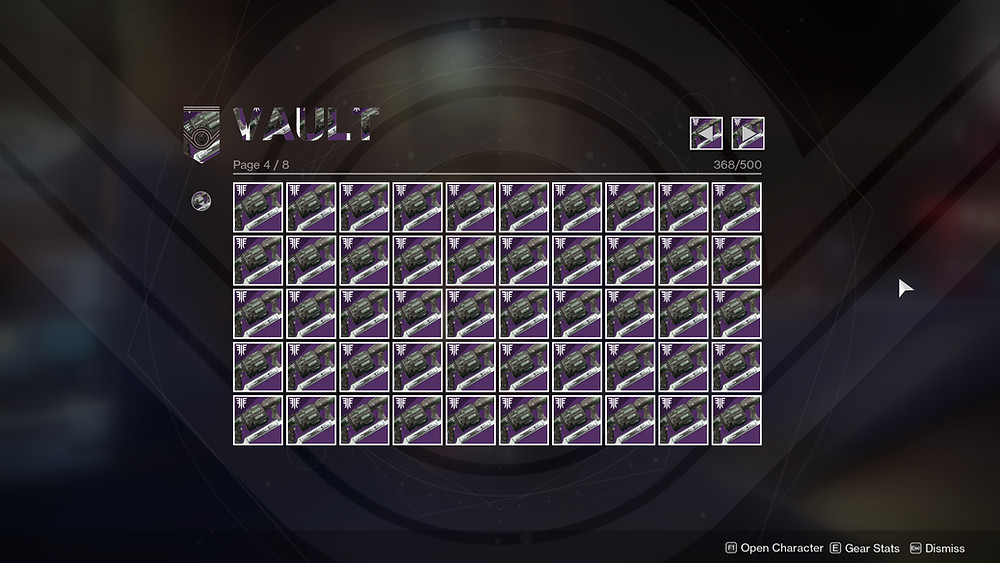

Burnt Edge Transits

A heaping pile of garbage for the man who hands out garbage on the daily.
We all know Master Rahool right? Smug Cryptarch in the Tower who only seems to hand out useless loot
to all the Guardians bringing him engrams. Most commonly, the USELESS heavy grenade launcher,
EDGE TRANSIT. How about we give him a taste of his own medicine?
Note: Only possible to bake cookie during the Dawning.
Ingredients
- 15 Dawning Essence
- Two Ingredients that DON'T go together. Examples include:
- Cabal Oil and Personal Touch
- Chitin Powder and Bullet Spray
- Taken Butter and Perfect Taste
Steps
- Collect said ingredients in Eva's Holiday Oven.
- Put them together and ignore the actual recipes the game wants you to make.
- Create some disgusting, useless abominations of cookies.
Great, now you can give Rahool a perfect return gift for all the useless crap he's given you. What a healthy relationship.
Return to Homepage